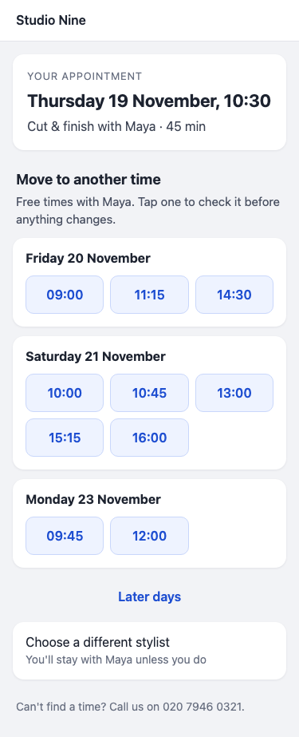
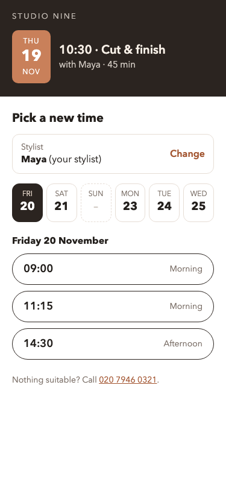

Same sample appointment in each: Jordan, cut & finish with Maya, Thursday 19 November at 10:30. Shown at real phone size (375 px wide), then the top of each enlarged 2×. The red dashed line is the bottom of an iPhone screen (812 px); below it the customer scrolls. You can pick one, or mix parts of them.
At real size, 375 px wide
A · Card and day listAppointment on a card; every free day below as its own card with a grid of time buttons. Scroll to see more days.

B · Week stripBold header with the current appointment; pick a day from a week strip, then one of that day's times.

C · Plain letterReads like a note from the salon; Maya's soonest free times as a simple list, other days and stylists as links.